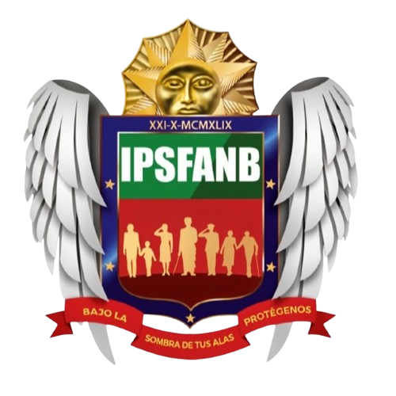

La intervención cultural no se limita a un ejercicio técnico; es un proceso que busca activar el sentido de pertenencia, el orgullo institucional y el propósito compartido. Su objetivo es alinear la estrategia con la forma en que trabajamos, colaboramos y nos relacionamos, asegurando que la cultura sea un motor de desempeño y no un factor de fricción.
Evolucionar de manera ordenada, profesional y participativa, potenciando lo que ya hemos construido y generando las condiciones para una cultura más integrada, transparente y orientada al alto rendimiento en la Inversora IPSFANB.